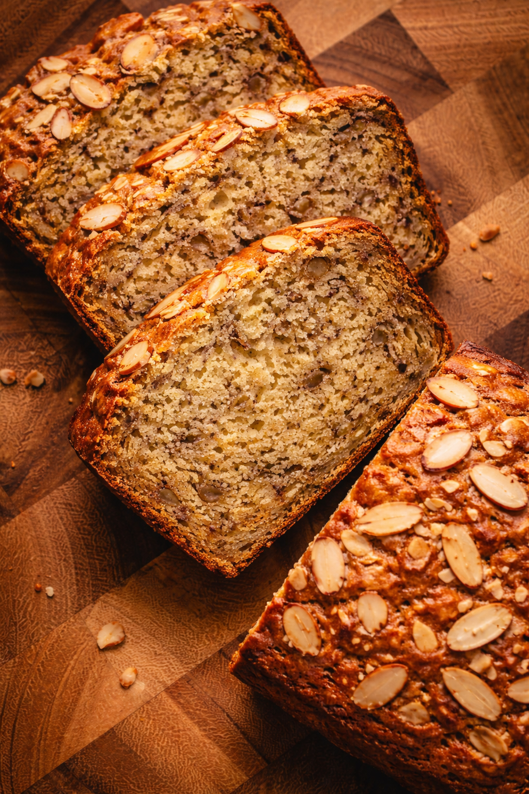

Banana Bread

Description
The taste of the gods reunite here with the mixture of flour
and some ripe bananas...none of the ingredients individualy is as magic
as the miraculous mixing
Ingredients
- 3 ripe bananas, mashed
- 2 large eggs
- 1/2 cup allulose sweetener
- 1/3 cup melted coconut oil or unsalted butter
- 1 teaspoon vanilla extract
- 1 1/2 cups all-purpose flour (or whole wheat flour for a healthier option)
- 1 teaspoon baking soda
- 1/2 teaspoon salt
- 1/2 teaspoon ground cinnamon (optional)
- 1/2 cup chopped almonds (plus extra for topping)
Steps
- Preheat the oven to 175°C (350°F). Lightly grease a loaf pan or line it with parchment paper to prevent sticking.
- In a large mixing bowl, mash the ripe bananas thoroughly with a fork until smooth and mostly lump-free.
- Add the eggs, melted coconut oil (or butter), allulose sweetener, and vanilla extract to the mashed bananas. Whisk until the mixture is well combined and slightly creamy.
- In a separate bowl, combine the flour, baking soda, salt, and cinnamon. Stir to evenly distribute the dry ingredients.
- Gradually fold the dry mixture into the wet ingredients using a spatula. Mix gently until just combined; avoid overmixing to keep the bread soft and tender.
- Fold in the chopped almonds, ensuring they are evenly distributed throughout the batter.
- Pour the batter into the prepared loaf pan and smooth the top with a spatula.
- Sprinkle additional chopped almonds evenly over the surface to create a crunchy topping.
- Bake for 50–60 minutes, or until a toothpick inserted into the center comes out clean or with a few moist crumbs.
- Remove from the oven and allow the banana bread to cool in the pan for 10–15 minutes before transferring it to a wire rack to cool completely. Slice and serve once fully set.
Home